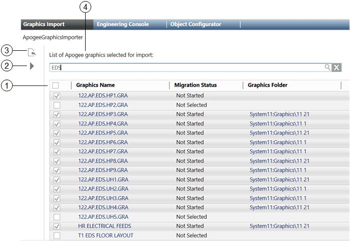

APOGEE Graphics Importer Workspace

APOGEE Graphics Importer | |
Item | Description |
1 | APOGEE Graphics Importer older Display
The checkboxes allow you to import folders individually by checking the checkbox next to each entry; or select the checkbox in the column heading to Import All the folders displayed in the list. The checkbox in the column heading can be used to either select all or unselect all checked boxes.
The name of the graphic.
Displays the current migration status of the graphic and any error messages encountered during the import.
The Desigo CC Graphics folder selected for the imported graphic. To select a folder for a graphic, drag a graphic folder from Application View > Graphics and drop it over the APOGEE Graphics Importer pane. You can multi-select graphics and the drag-and-drop folder applies to all selected graphics. If a graphic does not have an associated Graphics Folder, the graphic is then imported in the Graphics root folder. |
2 | Start Migration Initiates the process of importing the APOGEE graphics into the management station. |
3 | Select APOGEE Graphics Displays the Graphics Folder Selector which allows you to browse and select the APOGEE graphics you want to import into the management station. |
4 | Search Allows you to filter the displayed graphics according to the text entered. |